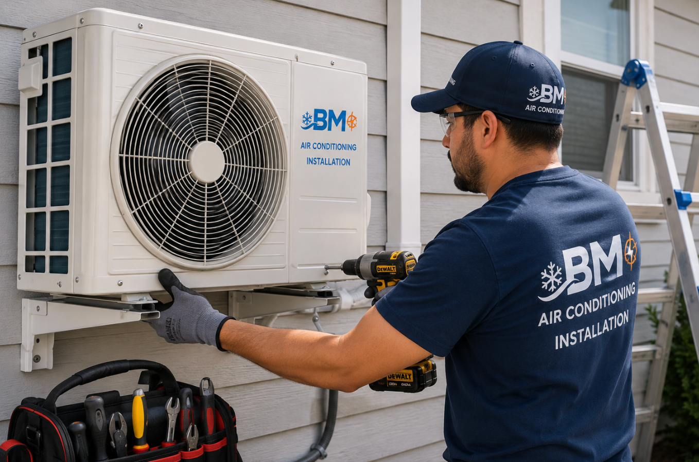

Instalación, reparación, mantenimiento y atención urgente de AC con Bryan Rodriguez.
Servicio para casas, apartamentos, oficinas y pequeños negocios.

Instalación profesional de nuevos sistemas de aire acondicionado, pruebas y puesta en funcionamiento.
Diagnóstico de poco enfriamiento, ruidos, fugas, fallas eléctricas, serpentines congelados y equipos que no encienden.
Servicio preventivo para mejorar el flujo de aire, reducir fallas, mejorar eficiencia y prolongar la vida del equipo.
Instalación, inspección y reparación de mini-splits para habitaciones, oficinas, tiendas y ampliaciones.
Cambio y configuración de termostatos y diagnóstico de controles del sistema.
Atención rápida cuando el sistema deja de enfriar y necesita diagnóstico o reparación urgente.